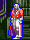
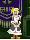
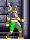
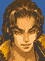
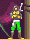
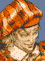
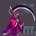
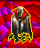

|
Character
หลังจากที่ Simon Belmont ได้ปราบ Dracula ก็ผ่านไปแล้ว 50 ปี
ในตอนนี้ Juste Belmont ได้เป็นทายาทสืบสกุล
Juste มีเพื่อนเก่าอยู่คนหนึ่ง คือ Maxim
แต่เมื่อ 2 ปีก่อน Maxim ได้ออกไปฝึกฝนตนเอง
วันหนึ่ง Juste ได้พบกับ Maxim ซึ่งได้รับบาดเจ็บสาหัส
Maxim ได้บอกว่า Lydie ซึ่งเป็นเพื่อนสมัยเด็กอีกคน ถูกลักพาตัวไป
ส่วนเขานั้น สูญเสียความทรงจำระหว่างที่ไปฝึกฝน จำอะไรไม่ได้เลย
จำได้เพียงลางเลือนว่า Lydie ถูกลักพาตัวไปเพียงเท่านั้น
และเขาได้บอกให้ Juste เข้าไปค้นหาเธอในปราสาทของ Dracula
Juste Belmont 
Juste เป็นผู้สืบทอดสกุล Belmont คนหนึ่ง ซึ่งเป็นสกุลที่มีชื่อเสียงในการปราบผีดิบ
อีกทั้งเขายังได้รับสืบทอดพลังเวทย์มนต์อันมหาศาลมาจากสกุล Fernandez อีกด้วย
Juste ได้รับสืบทอดแส้ อันเป็นสัญลักษณ์ของนักล่าผีดิบ เมื่ออายุเพียง 16
ปีเท่านั้น
Lydie Elranger

Lydie เป็นเพื่อนในวัยเด็กของ Juste และ Maxim
เธอคอยเป็นกำลังใจให้กับทั้งสองในระหว่างการฝึกฝน
Maxim Kischine

Maxim เป็นเพื่อนในวัยเด็กของ Juste และเป็นคู่แข่งกันอีกด้วย
เขาใช้ดาบอันเป็นเอกลักษณ์เฉพาะที่ชื่อ Stellar Sword
เมื่อ 2 ปีที่แล้ว หลังจากที่ Juste ได้รับสืบทอดเป็นนักล่าผีดิบ
เขาก็ได้ออกเดินทางเพื่อฝึกฝนตนเองให้เก่งมากยิ่งขึ้น
Maxim (Dark)
Maxim ผู้ชั่วร้าย ???
Merchant

พ่อค้าผู้ขายอาวุธและสิ่งของให้แก่ Juste
เขาตั้งร้านขายของอยู่ในที่แห่งหนึ่งภายในปราสาท
Death
Death เป็นผู้รับใช้ของ Dracula มีพลังมหาศาล
Dracula Wraith
Dracula ผู้มีชีวิตอมตะ
|